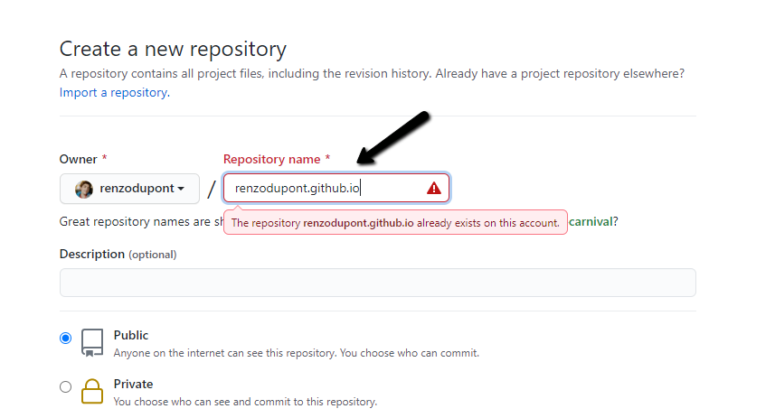
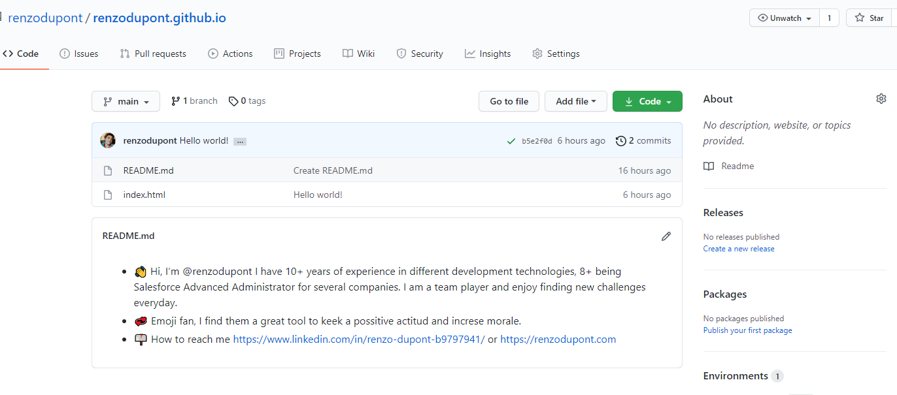
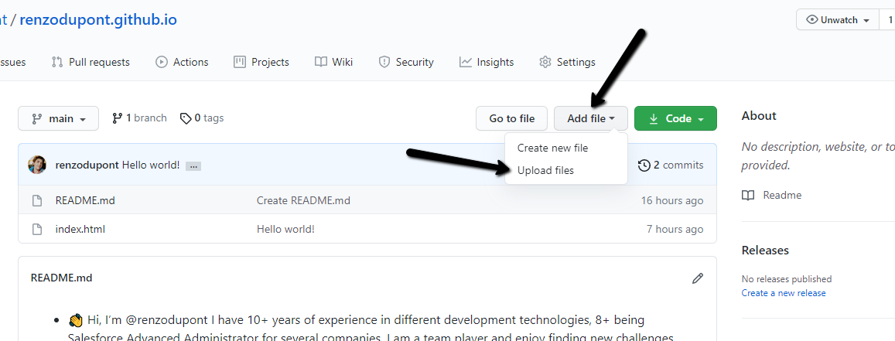

I also was new creating a website in Github and had a lot of questions. I hope to cover the most common issues and steps so you can setup your own site!
You can always reach me via instagram or twitter.
For this site I have used Bootstrap and jQuery to help organize the info without worrying too much about styling.
If you are not part of Github yet, go and create an account here. You can get an account for free and fairly easy. Choose a username that is meaningful for you or your organization.
A repository is the space where you will store all the files needed for your website to work. It also provides version control using GIT. With Github pages, you also get the ability to share your site with the public quick and easy.
Once you have your account, it's time to create your first repository. Since we want to use this repository as a public site, we need to follow the next convention:
Please note that in the next image, you will see the message "The repository already exists". This is because I already have a repo with this name, this won't happen to you.
Now that you have your repository, anything in this space will be available to the public via the URL of the repo.
For example, my repo is available at renzodupont.github.io, which is the name I chose earlier.
By default, the root document (what you first see when you go to the site) is the file called index.html
Please note that it might take some minutes for configuration to take place. If you go to your website and get a 404 error, wait at least 15 minutes and try again.
In order to add files to your repo, you can create a file called index.html in your computer and then upload it using the "Add File" button which is visible in the image.
Another alternative is to clone this repository using GIT into your computer and add any files you need. For this you will need some basic background on how to use GIT commands.
Create a file in your computer with the next content:
<html>
<head>
</head>
<body>
Hello World!
</body>
</html>
Name this file index.html. Then, go to your repository and click "Add File" as shown next:
That is it! You will be able to see your site using your repository URL as mentioned before.
Now your imagination is your limit! You can add new files, pages, images and much more to build your awesome site :)
Happy coding!